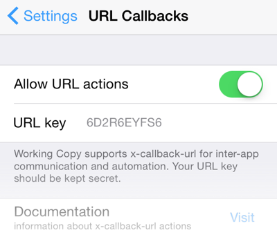
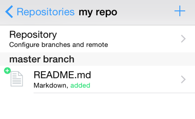
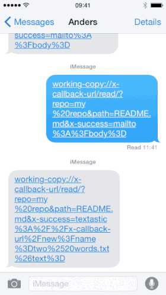

To allow automated workflows Working Copy can be controlled through x-callback-url.
The url-scheme is working-copy such that all URLs must have the form:
working-copy://x-callback-url/<command>/?x-success=<escaped-url>&repo=...&key=...
If you include a x-error parameter it will be used to deliver errors, otherwise errors are shown inside Working Copy. Including x-success is also optional but commands without side-effects will not say anything inside Working Copy on success.
 Because the commands allow reading and writing your sourcecode, they are protected by a key parameter which must match a random alphanumeric code created when you first launch Working Copy on a new device. You can edit this key inside settings to get the same code for all your devices making it easier to reuse scripts, but you should make sure never to use a key value you found in some public script, as this would be equivalent to sharing a password with everyone else.
To avoid very long examples the key parameter will not be included in every example here, but it IS required for every command. To avoid brute-force attempts at guessing the key, Working Copy will show errors related to key inside the app, but will not be calling x-error.
All commands requires the repo parameter that specifies which repository the command is about. This can either be the name of the repository as seen in the list of repositories in the outermost view of the app or the full remote url of the repository. Remember to url-encode repo just like all other parameters. Space needs to be percent- rather than plus-encoded.
 Write to existing or new files with the write command. If you include a text parameter this will be the content written to the file at the given path.
working-copy://x-callback-url/write/?key=123ABC&repo=my%20repo&path=README.md&text=hello%20there
Include the parameter append=1 to append the text or pasteboard content to the existing file. The path is relative to repository and must not start with /.
If you need to write images or other binary files you can transfer the content as base-64 by using the parameter base64= instead of text=. You need to URL-encode after base-64 encoding since the characters + and / occur after base-64 coding.
If you do not include either a text or base64 parameter the pasteboard content is written.
You can get the contents of text files with the read command and result will be URL-encoded and appended to the x-success callback.
working-copy://x-callback-url/read/?x-success=my-app://x-callback-url/read?t=/&repo=my%20repo&path=README.md
will make Working Copy open a url on the form:
my-app://x-callback-url/read?t=hello%20there
It should be noted that in order to support different apps that want to read text differently and might not follow the x-callback-url conventions (Pythonista being the prime example), you should include the parameter name at the end of x-success as in this Textastic example. Working Copy tries to be smart about appending the file content as &text=... if it detects a x-callback-url that would become malformed, but your best bet is to format x-success manually.
If you are reading a binary file the result will be transferred as base-64 and if Working Copy appends the parameter name it will be &base64=... but to ensure the file content is returned in base64 coding you include the input parameter base64=1.
working-copy://x-callback-url/read/?x-success=...&repo=my%20repo&path=README.md&base64=1
The commit command can be used on single files, directories or the entire repository. You use the path parameter to specify the files to take into account, where a missing or empty parameter means the entire repository is checked for modified files to commit.
To avoid accidentally committing unexpected changes the limit parameter is checked and if there are more changed files covered by path than allowed by limit the commit fails. The default is limit=1 but you can set it to large values if you intentionally want to commit all changes files.
You need to supply a message parameter for the commit message and formatting/wrapping this message in accordance with best practices is your responsibility.
working-copy://x-callback-url/commit/?repo=my%20repo&path=&limit=999&message=fix
Use the push command to send commits back to the origin remote. If you need to authenticate, the push command will wait until you have entered your credentials. You can push to other remotes than origin by using the remote paramater.
working-copy://x-callback-url/push/?repo=my%20repo
The pull command fetches and merges changes from your origin remote. If you need to authenticate, the pull command will wait until you have entered your credentials. Any merge conflicts will count as a error.
working-copy://x-callback-url/pull/?repo=my%20repo
Just like the push command you can use the remote parameter to pull from non-origin remotes.
 URL callbacks can get pretty complicated when you want to send the result of one callback along to another URL callback.
To create a new text file in Textastic with the filename "two words.txt" you would use the following URL:
textastic://x-callback-url/new?name=two%20words.txt&text=hello%20there
If you wanted to create this file with content from the file README.md in the repository my repo
you would need to URL escape the callback to Textastic which gives rise to double-encoding of parameters passed
along.
space → %20 → %2520
working-copy://x-callback-url/read/?repo=my%20repo&path=README.md&x-success=textastic%3A%2F%2Fx-callback-url%2Fnew%3Fname%3Dtwo%2520words.txt%26text%3D
You could also start a new email with the contents of this file, by making x-success use the mailto: scheme with something like
working-copy://x-callback-url/read/?repo=my%20repo&path=README.md&x-success=mailto%3A%3Fbody%3D